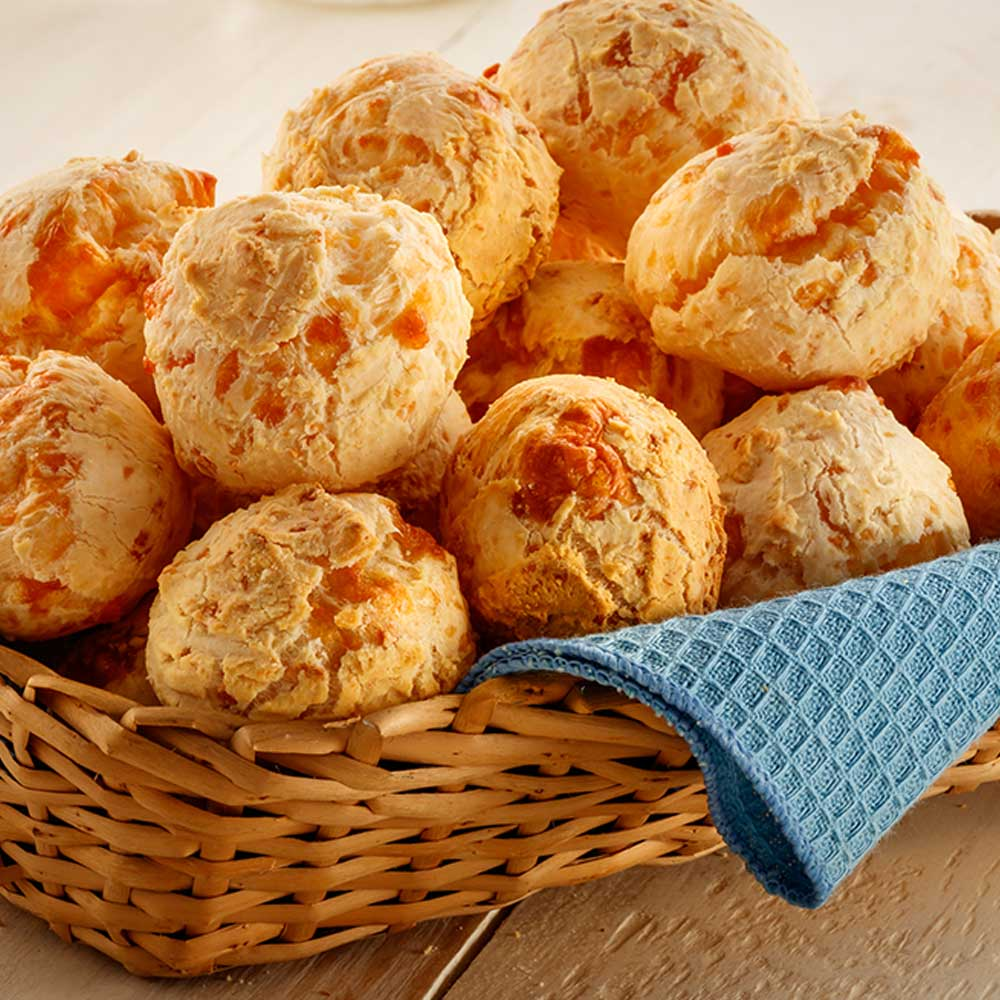

Chipa
El clásico pan de queso paraguayo, perfecto para disfrutar en cualquier momento del día.

Tiempo: 45 minutos
Dificultad: Media
Ingredientes:
- 500 g de almidón de mandioca
- 250 g de queso rallado
- 100 g de manteca
- 2 huevos
- 1 cucharadita de sal
- 100 ml de leche
Preparación:
- Precalienta el horno a 200°C.
- En un bol, mezcla el almidón de mandioca, el queso rallado y la sal.
- Añade la manteca y mezcla hasta obtener una textura arenosa.
- Incorpora los huevos y la leche, y amasa hasta formar una masa homogénea.
- Forma pequeñas bolitas con la masa y colócalas en una bandeja para hornear.
- Hornea durante 20-25 minutos o hasta que estén doradas.
- Sirve calientes y disfruta.